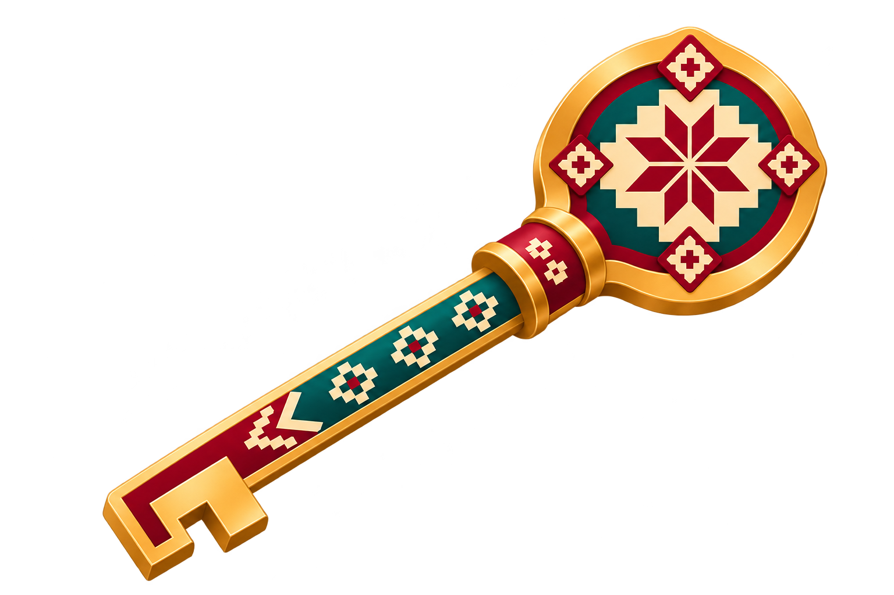

У каждого вопроса — свой ключ. Собери форму и открой замок.
Прогресс сохраняется в этом браузере.
Выбирай форму по пространственному вопросу. Здесь мы учимся на авторских примерах.
В сочетаниях сюрес вылын и пужым вылын изменяется пространственный послелог: вылын / вылэ / вылысь. Это отдельное слово, а не окончание существительного.
Не каждое русское «на» переводится через «выл»: сравни та интыын. Используй проверенные формы из таблицы.
Кнопка «← Назад» открывает уже пройденные задания: картинку, перевод, ваш ответ и объяснение. «Вперёд →» ведёт только по истории, до текущего шага. Кнопка «К текущему шагу» сразу возвращает к незавершённому заданию. Непройденные задания закрыты; просмотр не меняет баллы, попытки и выбранные элементы.
Выбери основу, затем окончание или послелог. Элементы можно убрать нажатием. Первая попытка приносит 10 баллов, вторая — 5. После двух ошибок показывается ответ, а задание возвращается в конце замка. Повтор помогает закрепить форму и не добавляет баллы.